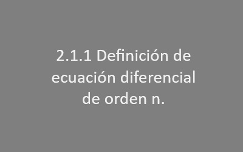
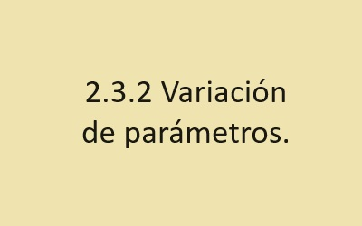
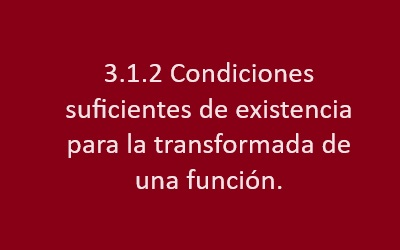

Ecuaciones diferenciales ordinarias de primer orden.

1.1 Teoría preliminar.
1.1.1 Definiciones (Ecuación diferencial, orden, grado, linealidad)

1.1.2 Soluciones de las ecuaciones diferenciales.

1.1.3 Problema de valor inicial.

1.1.4 Teorema de existencia y unicidad.
1.2 Ecuaciones diferenciales ordinarias.
1.2.1 Variables separables y reducibles.
1.2.2 Homogéneas.

1.2.3 Exactas.
1.2.4 Lineales.
1.2.5 De Bernoulli.
1.3 Aplicaciones.
pag 72-77
ver web
Tema 2 - Ecuaciónes diferenciales de orden superior
2.1 Teoría preliminar.

2.1.1 Definición de ecuación diferencial de orden n.
2.1.2 Problemas de valor inicial.
2.1.3 Teorema de existencia y unicidad.
2.1.4 Ecuaciones diferenciales lineales homogéneas.
pag 3
ver PDF2.1.4.1 Principio de superposición.
2.1.5 Dependencia e independencia lineal.Wronskiano.
2.1.6 Solución general de las ecuaciones diferenciales lineales homogéneas.
2.1.6.1 Reducción de orden.
2.2 Solución de ecuaciones diferenciales lineales homogéneas de coeficientes constantes.
2.2.1 Ecuación característica de una ecuación diferencial lineal de orden superior.
pag 26
ver PDF2.3 Solución de las ecuaciones diferenciales lineales no homogéneas.
2.3.1 Método de los coeficientes indeterminados.

2.3.2 Variación de parámetros.
2.4 La ecuación diferencial de Cauchy-Euler.
2.5 Aplicaciones
Ecuaciones diferenciales ordinarias de primer orden.
3.1 Teoría preliminar.
tipo: video
canal: MATE FACIL3.1.1 Definición de la transformada de Laplace.
tipo: video
canal: Fisica y Mates

3.1.2 Condiciones suficientes de existencia para la transformada de una función.
tipo: video
canal: cath math3.2 Transformada directa.
tipo: video
canal: Noemi lizárraga3.3 Transformada inversa.
tipo: video
canal: MateFacil3.4 Función escalón unitario.
tipo: video
canal: MateFacil3.5 Teoremas de traslación.
tipo: video
canal: UE center3.6 Transformada de funciones multiplicadas por tn, y divididas entre t.
tipo: video
canal: ingepedia3.7 Transformada de una derivada y derivada de una transformada.
tipo: video
canal: PROFE MARCO AYALA3.8 Teorema de convolución.
tipo: video
canal: MATEMATICAS CON LUZ3.9 Transformada de una integral.
tipo: video
canal: VAMOS A LA PIZARRA3.10 Transformada de una funciónperiódica.
tipo: video
canal: GUILLERMO MOORILLON MEZA3.11 Transformada de la función delta de Dirac.
tipo: video
canal: TAREAS PLUS3.12 Aplicaciones.
tipo: video
canal: LES INGENIERUS